Sessió 3 Explorar i entendre les dades
Objectius de la sessió
Anàlisi descriptiva
Visualització uni i bivariant
Altres visualitzacions
A la primera sessió hem vist un tipus de gràfic, concretament un gràfic de dispersió. Aquest s’utilitza quan volem visualitzar l’associació entre dues variables numèriques contínues, com per exemple, el temps d’intubació i l’edat dels pacients. A la segona sessió hem vist la representació gràfica del recompte d’una variable categòrica mitjançant un gràfic de barres. Per tant, no totes les variables es poden representar amb el mateix gràfic, i tampoc mitjançant el mateix tipus de resum numèric.
Un cop haguem identificat i definit les nostres variables ens hauriem de preguntar un parell de preguntes per tal de començar-ne l’exploració:
Quin tipus de variabilitat hi ha dins la meva variable?
Quin tipus de variabilitat hi ha entre les meves variables?
Aquestes dues preguntes són la base de l’anàlisi exploratori univariant (la primera) i bivariant (la segona)
Una mateixa variable pot pendre diferents valors per cada mesura, i per tant, cada observació introdueix una petita quantiat d’error que varia entre mesura i mesura. Cada variable té el seu propi patró de variabilitat, el qual ens pot informar de com i quan la variable varia dins d’una mateixa mostra o entre mostres. La millor manera de veure aquesta variabilitat és mitjançant resums numèrics i gràfics de la seva distribució.
3.1 Exploració d’una variable contínua
Variabla numèrica: és aquella que pren valors numèrics. Se’n distingeixen de dos tipus:
- **Numèrica discreta**: els seus valors no són infinits, sinó que són nombres enters- **Numèrica contínua**: els seus valors poden ser infinitsResum numèric
La forma de “resumir” una variable numèrica és mitjançant paràmetres estadístics descriptius que informen de la centralitat i variabilitat de la variable. Per conèixer els valors més comuns de la variable podem definir-ne la moda, la mitjana o la mediana. Per saber quant de variable és en podem calcular el mínim, el màxim, la desviació típica o el rang interquartíl·lic.
Existeixen moltes funcions amb R calcular aquests resums numèrics. Les funcions base d’R són una opció:
## [1] 50## [1] 71## [1] 63.33333## [1] 65## [1] 5.121225## [1] 26.22695## [1] 9## Edat diagnòstic:
## 0% 25% 50% 75% 100%
## 50 59 65 68 71summary() és una de les funcions bases d’R que permet fer resums numèrics simples:
## Min. 1st Qu. Median Mean 3rd Qu. Max.
## 50.00 59.00 65.00 63.33 68.00 71.00La funció tbl_summary() del paquet gtsummary és una bona opció per obtenir una taula bonica amb el resum numèric de la variable. Pots consultar ?gtsummary per veure les diferents opcions que permet.
| Characteristic | N = 481 |
|---|---|
| Edat diagnòstic: | 65 (59, 68) |
| 1 Median (Q1, Q3) | |
Visualització gràfica
La visualització de distribucions d’una sola variable contínua es pot fer através d’un histograma o bé de la seva funció de densitat.
Les funcions de ggpubr per fer-ho són:
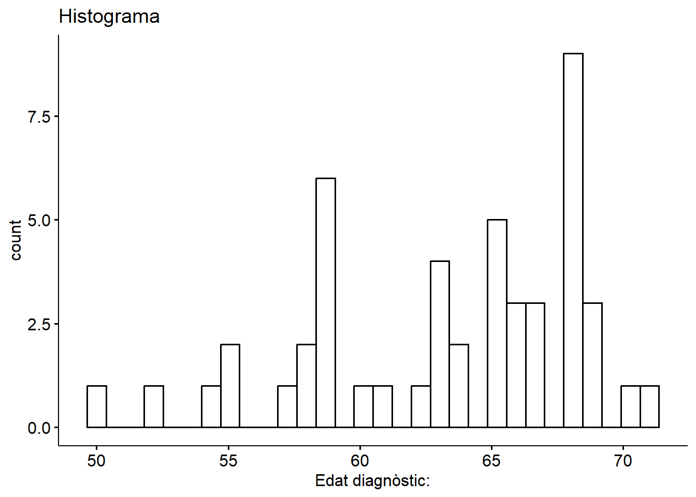
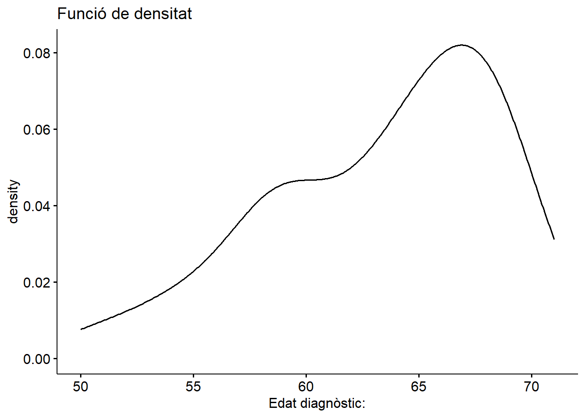
## Warning: Using `bins = 30` by default. Pick better value with the argument
## `bins`.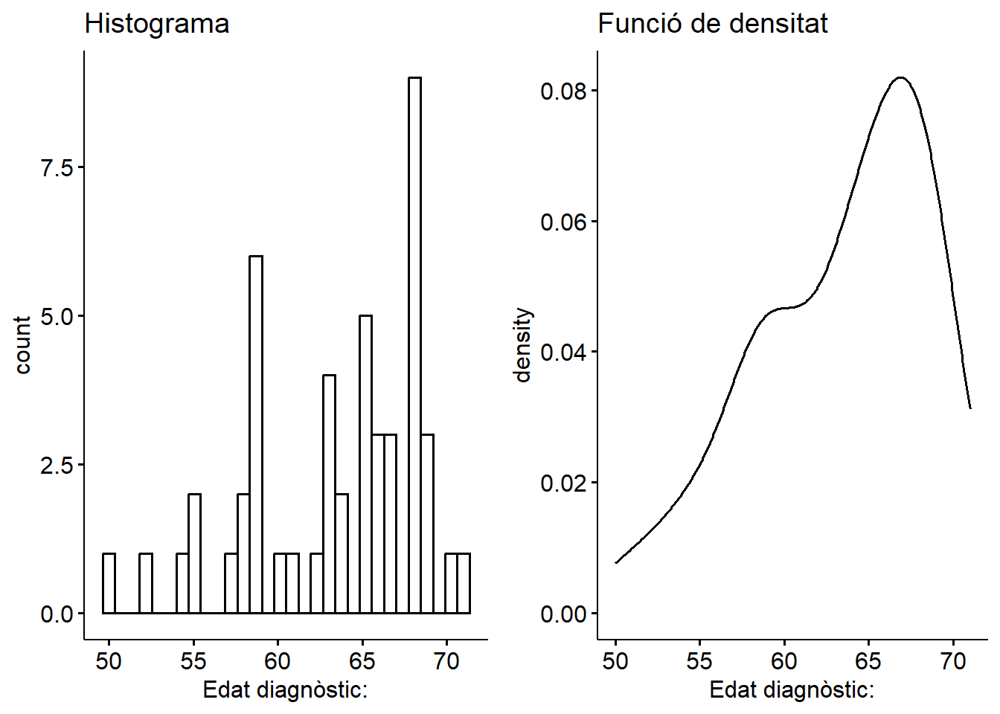
3.2 Exploració d’una variable categòrica
Variabla categòrica: els seus valors són categories.
- **Categòrica nominal**: les categories de la variable no segueixen un ordre predefinit.- **Categòrica ordinal**: les categories de la variable segueixen un order concret i lògicEls valors de les variables categòriques no són numèrics, per tant, per representar-les no podem representar directament els veus valors, sinó el recompte d’observacions que correspon a cada categoria.
3.2.1 Taula de freqüència
Les taules que resumeixen el nombre d’observacions que s’han registrat per cada categoria de la variable s’anomenen taules de freqüències. Amb R, podem utilitzar la funció table():
##
## 0 I II IIA IIB IIC III
## 3 13 3 10 2 1 0
## IIIA IIIB IIIC IV Desconegut
## 0 7 4 5 0##
## 0 I II IIA IIB IIC III
## 0.06250000 0.27083333 0.06250000 0.20833333 0.04166667 0.02083333 0.00000000
## IIIA IIIB IIIC IV Desconegut
## 0.00000000 0.14583333 0.08333333 0.10416667 0.00000000##
## 0 I II IIA IIB IIC III
## 6.250000 27.083333 6.250000 20.833333 4.166667 2.083333 0.000000
## IIIA IIIB IIIC IV Desconegut
## 0.000000 14.583333 8.333333 10.416667 0.000000De nou, la funció tbl_summary() genera una taula estructurada del recompte de la variable categòrica:
| Characteristic | N = 481 |
|---|---|
| estadi_clinic.factor | |
| 0 | 3 (6.3%) |
| I | 13 (27%) |
| II | 3 (6.3%) |
| IIA | 10 (21%) |
| IIB | 2 (4.2%) |
| IIC | 1 (2.1%) |
| III | 0 (0%) |
| IIIA | 0 (0%) |
| IIIB | 7 (15%) |
| IIIC | 4 (8.3%) |
| IV | 5 (10%) |
| Desconegut | 0 (0%) |
| 1 n (%) | |
3.2.2 Visualització gràfica
El gràfic que permet visualitzar les dades de la taula de freqüències és el gràfic de barres. L’alçada de la barra correspon a la freqüència d’aquella categoria.
Per fer el braplot primer necessitem crear la taula de freqüències (en forma de dataframe):
## Var1 Freq
## 1 0 3
## 2 I 13
## 3 II 3
## 4 IIA 10
## 5 IIB 2
## 6 IIC 1
## 7 III 0
## 8 IIIA 0
## 9 IIIB 7
## 10 IIIC 4
## 11 IV 5
## 12 Desconegut 0I després crear el gràfic a partir de la taula de freqüències:
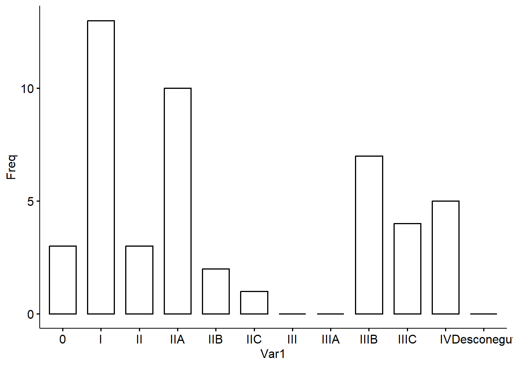
### Exercicis Fer barplot de les freqüències relatives3.3 Representació de la relació entre dues variables: una discreta i una contínua
A banda d’analitzar el comportament (variabilitat) d’una sola variable, segurament també ens interessa veure el comportament entre variables. La tendència dels valors de dues o més variables de variar conjuntament s’anomena covariància. En funció de la tipologia de variables, la relació entre elles s’explorarà d’una manera o d’una altra
Resums numèrics
En el cas que una de les variables sigui numèrica i l’altre categòrica, haurem d’explorar la variable numèrica dins de cada categoria de la variable categòrica. Per tant, podem elaborar resums numèrics (de la variable numèrica) per cada categoria (de la variable categòrica).
Amb funcions base d’R:
## Home Dona No binari
## 64.73077 61.68182 NATot i que el format del resultat no és molt bonic, queda’t amb aquesta funció tapply() perquè té moltes aplicacions. La funció es construeix sempre amb la mateixa estructura: tapply(<var.num.>, <var.cat>, <funció>), i el que fa és el següent: aplica la <funció> sobre la <var.num.> en funció de cada categoria de la <var.cat>.
Altres opcions més estètiques amb la funció tbl_summary():
| Characteristic | Home N = 261 |
Dona N = 221 |
No binari N = 01 |
|---|---|---|---|
| Edat diagnòstic: | 66 (63, 68) | 61 (59, 67) | NA (NA, NA) |
| 1 Median (Q1, Q3) | |||
Visualització gràfica
La visualització de les distribucions d’una variable numèrica per cada grup o categoria d’una categòrica és el gràfic de caixes (boxplot) per cada categoria.
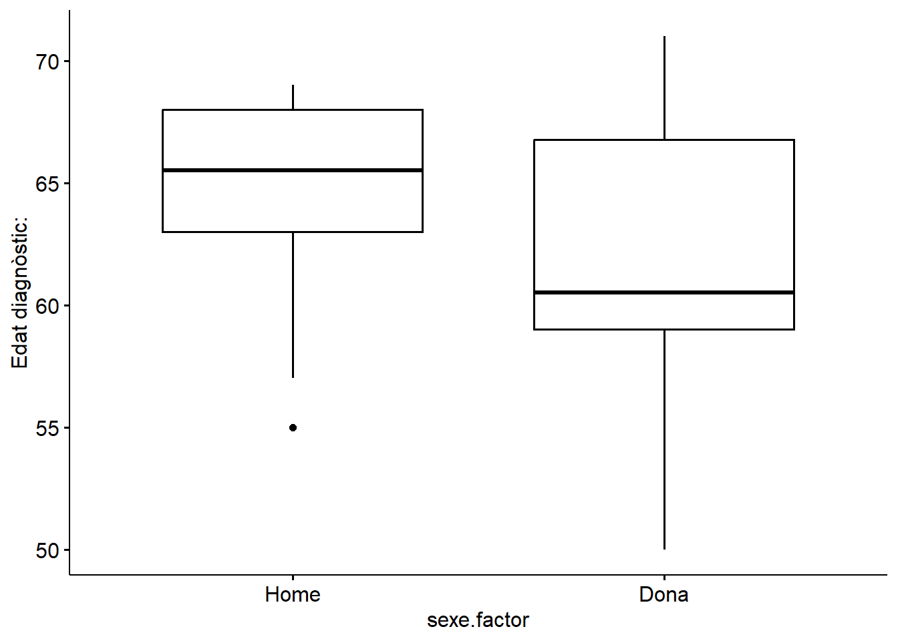
I les seves variants:
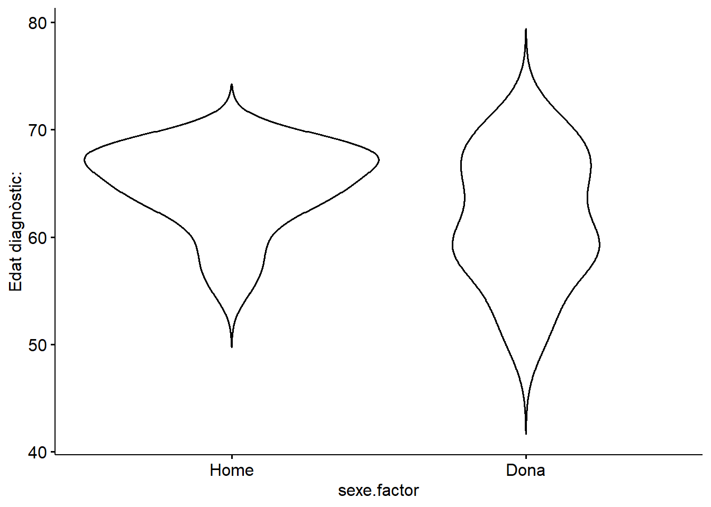
## Bin width defaults to 1/30 of
## the range of the data. Pick
## better value with `binwidth`.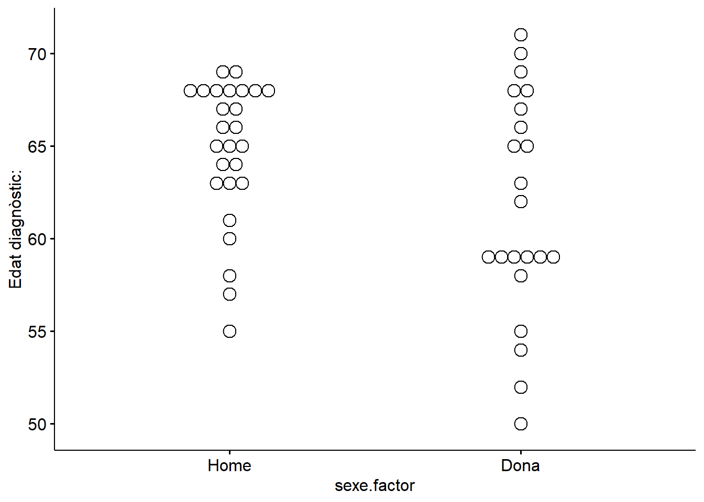
En el diagrama de caixes ens pot interessar afegir-hi totes les observacions en forma de punts. Ho fem amb l’argument add =:
ggboxplot(data, x = "sexe.factor", y = "edat_diagn",
add = "jitter") # jitter afegeix els punts al diagrama de caixes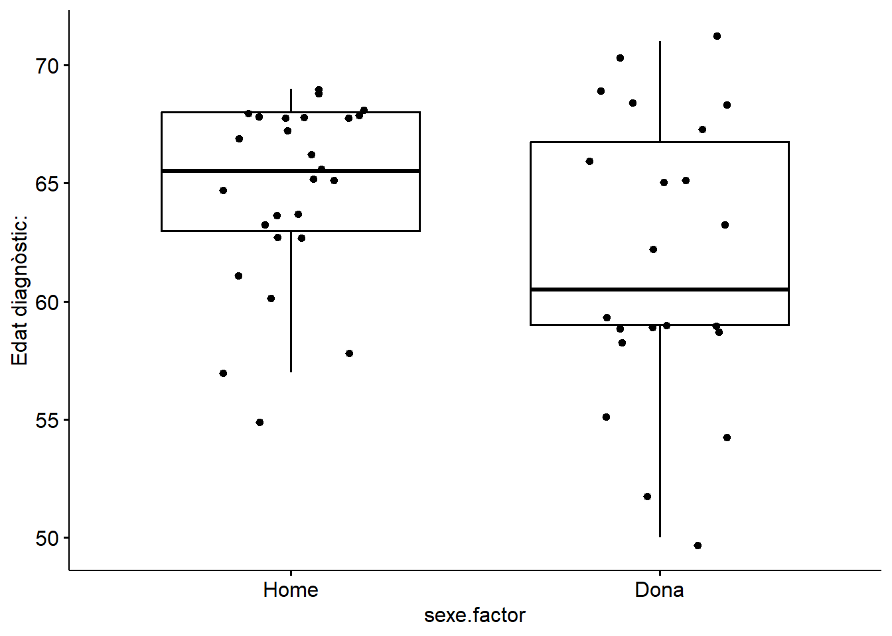
O el que és el mateix…ggstripchart(data, x = "sexe.factor", y = "edat_diagn",
add = "boxplot") # boxplot afegeix les caixes a un diagrama de punts## Representació de la relació entre dues variables categòriques
Similar a explorar una variable categòrica, quan volem explorar la relació entre dues categòriques també hem de fer el recompte del nombre d’observacions corresponents a cada una de les combinacions de totes les categories dels dos factors. Per exemple, seguint dins del context del càncer de còlon i recte…
Resum numèric
La taula de contingència per dues variables categòriques és una taula de freqüències de doble entrada. Aquesta taula té tantes columnes com categories d’una de les variables, i tantes files com categories de l’altra variable. Els valors de la taula corresponen al recompte d’observacions de totes les combinacions definides per les categories de les dues variables.
Veiem el següent exemple entre sexe i l’estadi clínic;
##
## 0 I II IIA IIB IIC III IIIA IIIB IIIC IV Desconegut
## Home 0 6 1 6 2 0 0 0 4 2 5 0
## Dona 3 7 2 4 0 1 0 0 3 2 0 0
## No binari 0 0 0 0 0 0 0 0 0 0 0 0Les freqüències relatives en aquest cas es poden calcular segons:
- freqüències totals:
##
## 0 I II IIA IIB IIC
## Home 0.00000000 0.12500000 0.02083333 0.12500000 0.04166667 0.00000000
## Dona 0.06250000 0.14583333 0.04166667 0.08333333 0.00000000 0.02083333
## No binari 0.00000000 0.00000000 0.00000000 0.00000000 0.00000000 0.00000000
##
## III IIIA IIIB IIIC IV Desconegut
## Home 0.00000000 0.00000000 0.08333333 0.04166667 0.10416667 0.00000000
## Dona 0.00000000 0.00000000 0.06250000 0.04166667 0.00000000 0.00000000
## No binari 0.00000000 0.00000000 0.00000000 0.00000000 0.00000000 0.00000000- freqüències respecte el total de les files:
##
## 0 I II IIA IIB IIC
## Home 0.00000000 0.23076923 0.03846154 0.23076923 0.07692308 0.00000000
## Dona 0.13636364 0.31818182 0.09090909 0.18181818 0.00000000 0.04545455
## No binari
##
## III IIIA IIIB IIIC IV Desconegut
## Home 0.00000000 0.00000000 0.15384615 0.07692308 0.19230769 0.00000000
## Dona 0.00000000 0.00000000 0.13636364 0.09090909 0.00000000 0.00000000
## No binari- freqüències respecte el total de les columnes:
##
## 0 I II IIA IIB IIC III
## Home 0.0000000 0.4615385 0.3333333 0.6000000 1.0000000 0.0000000
## Dona 1.0000000 0.5384615 0.6666667 0.4000000 0.0000000 1.0000000
## No binari 0.0000000 0.0000000 0.0000000 0.0000000 0.0000000 0.0000000
##
## IIIA IIIB IIIC IV Desconegut
## Home 0.5714286 0.5000000 1.0000000
## Dona 0.4285714 0.5000000 0.0000000
## No binari 0.0000000 0.0000000 0.0000000En funció de com volem comunicar els resultats, optarem per un tipus de freqüències o un altre.
Visualització gràfica
Les freqüències es visualitzen amb un gràfic de barres:
freq_estadi_sexe <- data.frame(prop.table(table(data$sexe.factor, data$estadi_clinic.factor), 2))
freq_estadi_sexe## Var1 Var2 Freq
## 1 Home 0 0.0000000
## 2 Dona 0 1.0000000
## 3 No binari 0 0.0000000
## 4 Home I 0.4615385
## 5 Dona I 0.5384615
## 6 No binari I 0.0000000
## 7 Home II 0.3333333
## 8 Dona II 0.6666667
## 9 No binari II 0.0000000
## 10 Home IIA 0.6000000
## 11 Dona IIA 0.4000000
## 12 No binari IIA 0.0000000
## 13 Home IIB 1.0000000
## 14 Dona IIB 0.0000000
## 15 No binari IIB 0.0000000
## 16 Home IIC 0.0000000
## 17 Dona IIC 1.0000000
## 18 No binari IIC 0.0000000
## 19 Home III NaN
## 20 Dona III NaN
## 21 No binari III NaN
## 22 Home IIIA NaN
## 23 Dona IIIA NaN
## 24 No binari IIIA NaN
## 25 Home IIIB 0.5714286
## 26 Dona IIIB 0.4285714
## 27 No binari IIIB 0.0000000
## 28 Home IIIC 0.5000000
## 29 Dona IIIC 0.5000000
## 30 No binari IIIC 0.0000000
## 31 Home IV 1.0000000
## 32 Dona IV 0.0000000
## 33 No binari IV 0.0000000
## 34 Home Desconegut NaN
## 35 Dona Desconegut NaN
## 36 No binari Desconegut NaN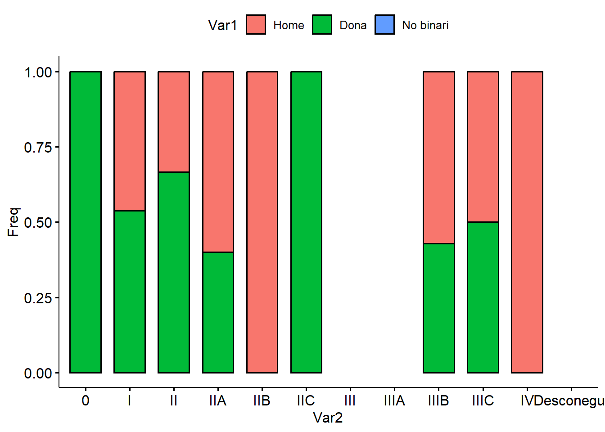
3.4 Representació de la relació entre dues variables contínues
Per exemplificar-ho recuperarem l’exemple de l’experiment sobre intubació orotraqueal.
Resum numèric
La relació entre dues variables numèriques la podem explorar mitjançant el coeficient de correlació
# Carreguem les dades del paquet medicaldata
library(medicaldata)
laryngo <- medicaldata::laryngoscope
# Calculem el coeficient de correlació
cor(laryngo$age, laryngo$attempt1_time)## [1] 0.3237331Podem canviar nosaltres el coeficient de correlació
## [1] 0.31283213.5 Representació de dades aparellades o longitudinals
Les dades aparellades o longitudinals són dissenys experimentals freqüents en medicina ja que permeten fer un seguiment del pacient i veure la seva evolució. La visualització i tractament d’aquestes dades però es mareix una atenció especial, ja que és molt important tenir clar que no es tracta de mesures totalment independents entre elles, sinó que provenen d’un mateix individu.
La visualització d’aquesta tipologia de dades és mitjançant un gràfic de línies. Per exemplificar-ho utilitzarem el conjunt de dades polyps de medicaldata.
Primer carreguem el paquet
Després posem a punt el data frame per tenir una única columna amb el nombre de pòlips registrats a cada visita:
polyps_long <- pivot_longer(polyps,
cols = c(baseline, number3m, number12m),
names_to = "visit",
values_to = "n_polyps")
polyps_long## # A tibble: 66 × 6
## participant_id sex age treatment visit n_polyps
## <chr> <fct> <dbl> <fct> <chr> <dbl>
## 1 001 female 17 sulindac baseline 7
## 2 001 female 17 sulindac number3m 6
## 3 001 female 17 sulindac number12m NA
## 4 002 female 20 placebo baseline 77
## 5 002 female 20 placebo number3m 67
## 6 002 female 20 placebo number12m 63
## 7 003 male 16 sulindac baseline 7
## 8 003 male 16 sulindac number3m 4
## 9 003 male 16 sulindac number12m 2
## 10 004 female 18 placebo baseline 5
## # ℹ 56 more rowsSeleccionem aquelles mostres que se’ls va administrar el tractament:
Visualitzem el nombre de pòlips al llarg del temps en cada individu:
## Warning: Removed 2 rows containing
## non-finite outside the scale
## range (`stat_boxplot()`).## Warning: Removed 2 rows containing
## missing values or values
## outside the scale range
## (`geom_line()`).## Warning: Removed 2 rows containing
## missing values or values
## outside the scale range
## (`geom_point()`).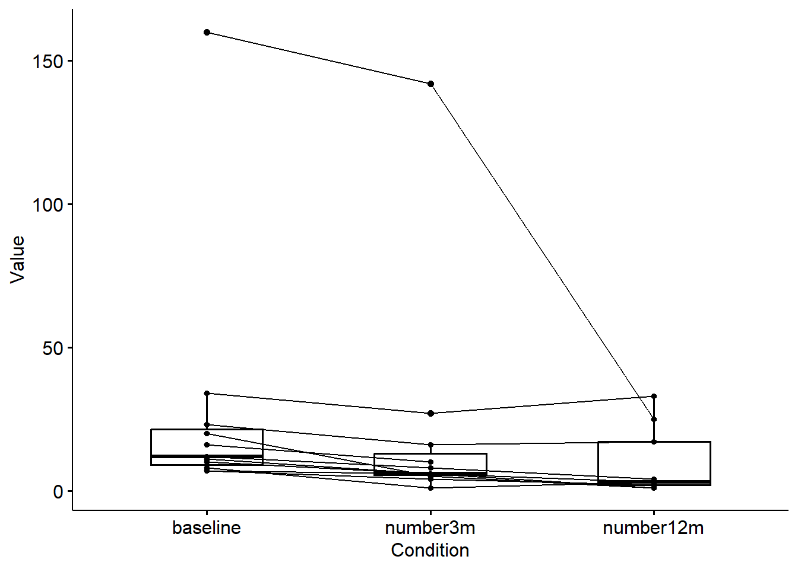
ggline(data = polyps_long_tr, x = "visit", y = "n_polyps",
id = "participant_id", color = "participant_id")## Warning: Removed 2 rows containing
## missing values or values
## outside the scale range
## (`geom_line()`).
## Removed 2 rows containing
## missing values or values
## outside the scale range
## (`geom_point()`).
Amb aquest gràfic observem la tendència de cada individu, però com podem saber si el tractament ha tingut efecte?
Per veure si el nombre de pòlips canvia al llarg del temps de mateixa manera en individus tractats dels no tractats, podem colorejar les observacions segons el tractament:
ggline(data = polyps_long, x = "visit", y = "n_polyps",
id = "participant_id", color = "treatment",
add = c("median_iqr", "jitter"))
3.6 Altres representacions
A vegades però, ens farà falta ser creatius i crear gràfics que surten una mica d’aquest marc que acabem d’explicar. És per això que us animo a explorar alternatives per representar algunes dades.
ggdotchart(data = polyps_long, x = "participant_id", y = "n_polyps",
color = "visit",
shape = "treatment",
group = "treatment",
rotate = T)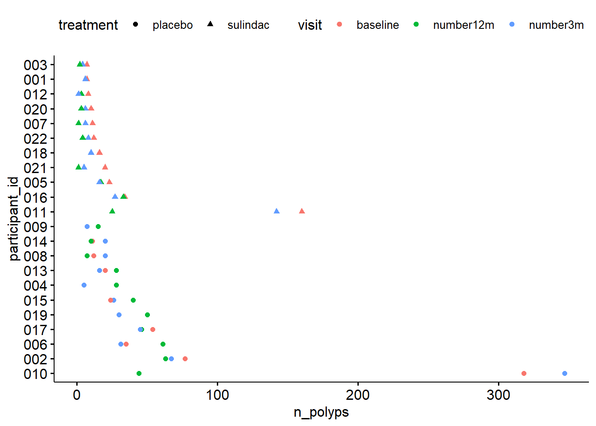